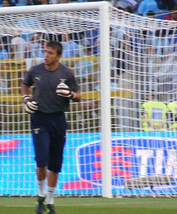
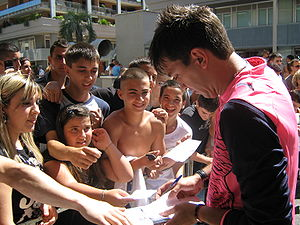
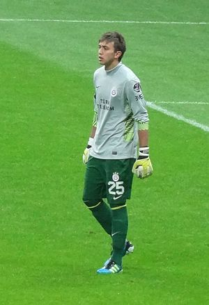
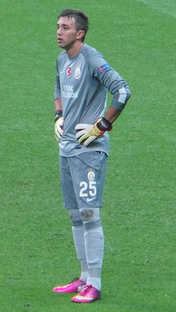
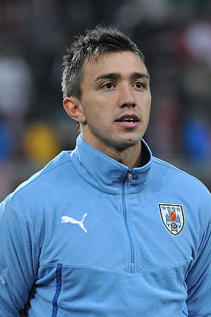
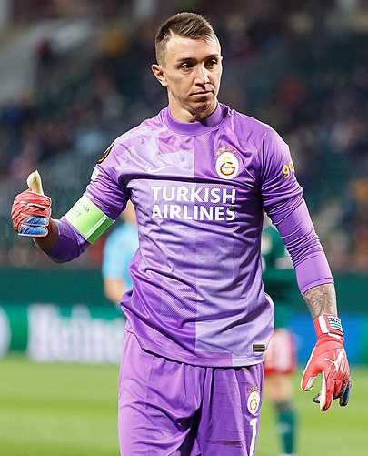

|
Néstor Fernando Muslera Micol (İspanyolca telaffuz:
[feɾ'nando mus'leɾa]) (d. 16
Haziran 1986; Buenos Aires, Arjantin) Uruguaylı millî futbolcudur. Süper Lig takımlarından
Galatasaray'da forma giymektedir. FIFA'nın "Dünyanın en iyi Kalecileri"
listesine girmiştir. Galatasaray'ın futbol takımında en çok forma giyen yabancı futbolcudur.
İçindekiler
- Kulüp kariyeri
- Montevideo Wanderers
- Nacional(kiralık)
- Lazio
- Galatasaray
- 2011-12
- 2012-13
- 2013-14
- 2014-15
- 2015-16
- 2016-17
- 2017-18
- 2018-19
- 2019-20
- 2020-21
- Milli takım kariyeri
- Başarıları
- Kulüp
- Millî takım
- Bireysel
Kulüp kariyeri
Montevideo Wanderers
2004 yılına kadar Uruguay’ın Montevideo Wanderers takımının altyapısında forma giyen genç kaleci,
daha sonra aynı takımda profesyonel oldu.
İki yıl boyunca A Takım'da görev yaptıktan sonra kiralık olarak Nacional'de forma giymeye başladı.
Nacional(Kiralık)
Burada geçirdiği kısa sürede dikkat çekerek Arsenal, Juventus, Lazio ve Benfica gibi kulüplerin
gündemine giren Muslera'nın yolu
İtalya'nın Lazio takımıyla kesişti.
Lazio
|


|
İtalyan ekibinin Arjantinli Juan Pablo Carrizo'nun transferini bir yıl ertelemek zorunda
kalmasının
da etkisiyle 2007 yazında 3 milyon € karşılığında Lazio'lu olan kalecinin, efsane Angelo
Peruzzi'nin
futbolu bırakması, takımın bir diğer kalecisi Marco Ballotta'nın da 43 yaşında olması
nedeniyle
birinci kaleci olması bekleniyordu. Nitekim Serie A'da üçüncü haftayla birlikte formayı
sırtına
geçirdi. Ancak yedinci haftada oynanan Milan maçında yediği beş golün dördünde yaptığı
hatalar, genç
eldivenin hayallerini ileriki bir tarihe ertelemesine neden oldu. O sezon ligde yalnızca
32, 33, 36
ve 38. haftalarda görev alabilen Muslera, üç kez de Coppa Italia'da kaleye geçti.
2008-09 sezonu da Muslera için pek iyi başlamadı. Genç kaleci, kulübün nihayet kadrosuna
kattığı
Arjantinli eldiven Carrizo'nun arkasında ikinci tercihti. Ligde ilk 20 hafta boyunca bir
kez olsun
forma giyemeyen Muslera, kupada ise ancak bir maçta sahaya çıkabildi. Buna karşın
Carrizo'nun
performansı da pek iyi görünmüyordu. Yılın ikinci yarısıyla birlikte teknik direktör
Delio Rossi'yle
de sorunlar yaşayan Arjantinli, yerini Muslera'ya kaptırdı. Uruguaylı ise ilk maçında
yediği üç gole
engel olamasa da Sampdorialı Bellucci'nin ayağından çıkan penaltı vuruşunu kurtararak
teknik
direktörüne kendisini seçmesi için bir neden verdi. Ligde son üç haftaya kadar takımının
kalesini
koruyan Muslera, Coppa Italia'da da kalan tüm maçlarda oynadı ve penaltılara kalan
finalde Antonio
Cassano ve Campagnaro'nun vuruşlarında gole geçit vermeyerek kariyerinin ilk efsane
maçını
repertuvarına ekledi. Bu performans, Lazio'yu 2009-10 sezonu öncesinde takımdan ayrılan
Carrizo'nun
yerini doldurmak için yaptığı arayışları "ikinci kaleci" yönünde yapmaya itti. Genç
Uruguaylı,
takımının artık birinci kalecisiydi. Ligde 36 maçta forma giyen Muslera, topu 42 kez
koruduğu
filelerde gördü, iki kez maçın oyuncusu seçilirken 7 maçta ise kalesini gole kapattı.
İtalya
Kupası’nda da iki maçta forma giyen yetenekli kaleci, Inter'le oynanan ve takımının 2-1
kazandığı
İtalya Süper Kupası maçının da "En İyi Oyuncu"su seçildi. Muslera, UEFA Avrupa Ligi'nde
de dört maça
çıkarken ilk kez bir önceki sezon giydiği millî formayı bu sezonda tam 11 kez giydi. Ve
Muslera,
IFFHS tarafından 2010 yılının dünyada en iyi 7. kalecisi olarak gösterildi
Fernando Muslera, 2010-11 sezonunda ise Serie A'da 36 maçta Lazio'nun kalesini korudu. Bu
maçlarda
kalesinde 39 gol gören başarılı eldiven, 13 maçta kalesinde gole izin vermemişti.
Muslera,
Manchester United ve Atlético Madrid gibi kulüplerinde listesinde bulunmasına rağmen
2011-12 sezonu
öncesi 6.750.000 Euro bonservis bedeli ile Galatasaray'a transfer oldu.
|
Galatasaray
2011-12
|
Muslera Galatasaray forması ile ilk maçına Olympiakos karşısında çıkmış, fakat 1.
dakikada gelen gole
engel olamayınca takımı, hazırlık maçından 1-0 mağlup ayrılmıştır. Muslera ilk resmi
maçına İstanbul
Başakşehir karşısında çıkmış fakat kalesinde 2 gole engel olamamıştır ve takımı 2-0
mağlup olmuştur.
Muslera, Süper Lig'in 3. haftasında Galatasaray'ın deplasmanda oynadığı Kardemir
Karabükspor maçında
rakibine yaptığı hareket sonrası kırmızı kart görmüş ve takımını 10 kişi bırakmıştır. Bu
maç ile
birlikte 8 deplasman maçında kalesinde tek gol bile görmeyen Muslera, Galatasaray'ın
başarısındaki
en büyük mimarlardan biri olmuştur. Muslera, Galatasaray'daki ilk penaltı kurtarışını
ise Süper
Lig'in 2011-12 sezonunun 10. haftasında oynanan Mersin İdman Yurdu maçının 45.
dakikasında yapmış ve
takımının puan almasını sağlamıştır, ayrıca Muslera Galatasaray forması ile ilk derbi
maçına 20
Kasım 2011'de Beşiktaş karşısında çıkmış ve çok fazla kurtarış yaparak taraftarlar
tarafından maçın
adamı seçilmiştir. Antrenmanlarda Galatasaray'ın ve Brezilya millî takımının efsane file
bekçisi
Claudio Taffarel'in Türkiye'ye getirdiği mekanik şut makinesi tarafından çalıştırılan
Muslera, bu
makinenin ve Taffarel'in performansındaki artışın baş mimarı olduğunu söylemiştir.
İdolünün Güney
Amerikalı kaleci Oscar Cordoba olduğunu belirten Muslera, en büyük hayalinin ise Faryd
Mondragon ve
Cláudio Taffarel gibi Galatasaray tarihine geçmek olduğunu söylemiştir. 8 Nisan 2012
tarihinde
Manisaspor - Galatasaray karşılaşmasının 82. dakikasında kariyerindeki ilk golünü
atmıştır
(Penaltı). Ayrıca Muslera, attığı penaltı golü ile Galatasaray tarihinde Zoran
Simoviç'ten sonra gol
atan ilk kaleci olmuştur. Zoran Simoviç attığı golü 15 Nisan 1989'da Kahramanmaraşspor
takımına
atmıştır. Ayrıca Muslera aynı maçta Faryd Mondragon ve Claudio Taffarel'in elinde
bulunan normal
ligde 15 maç gol yememe rekorunu 19 maça çıkararak rekorun tek sahibi olmuştur. Fernando
Muslera
attığı penaltı golünden sonra "Kariyerimin ilk golü. Taraftarın inanılmaz bir desteği
vardı. Bana da
gidip atmak düştü. Normalde oyuncular atar ama bana da bu görev verildi. Her kaleciye
nasip olmaz.
Hocama teşekkür etmek istiyorum o izin verdi. Arkadaşlarım da izin verdi, onlara
teşekkür ederim.
Umarım gollerin devamı gelir." açıklamalarında bulundu. Kırdığı gol yememe rekoru
hakkında da
konuşan Muslera, "İnanılmaz gurur veriyor insana. Tarihe geçtiğim için çok mutluyum ama
bu herkesin
başarısı. Takımın da büyük sorumluluğu var. Gol yememem için büyük fedakarlıklar
yapıldı.
Şampiyonlukta ne kadar iddialı olduğumuzu bir kez daha gösterdik" sözleriyle
açıklamasını noktaladı.
Muslera 2011-2012 sezonun son maçında Fenerbahçe ile deplasmanda oynanan maçta ilk 11
başlamış ve
maçın sonunda gazeteciler tarafından yapılan oylamada maçın en iyi oyuncusu seçilmiştir.
Muslera
böylece Galatasaray'daki ilk sezonunda şampiyonluk yaşamıştır.
Kariyerindeki ilk ve tek golünü 8 Nisan 2012 tarihinde oynanan normal sezonun son maçı
olan
Manisaspor - Galatasaray maçında kaleci Volkan Babacan'a penaltıdan atmıştır.
|

|
2012-13
Muslera 2012-13 sezonunda ise ilk resmi maçına Fenerbahçe karşısında Süper kupa maçında çıkmış ve
Galatasaray bu maçı 3-2 kazanarak Süper Kupa'nın sahibi olmuştur. Muslera ilk lig maçına Kasımpaşa
karşısında çıkmış duran toptan kalesinde bir gol görmüş fakat Galatasaray bu maçı 2-1 kazanmıştır.
Muslera bir sonraki haftada ise Beşiktaş karşısında forma giymiş kalesinde 3 gol görmüş ve
eleştirilere mağruz kalmıştır. Bu maçta Galatasaray son dakika penaltı kazanmış ve maç 3-3
beraberlikle bitmiştir. Galatasaray'ın Old Trafford'da Manchester United ile oynadığı maçta da ilk
11 başlayan Muslera, birçok pozisyonda Manchester'a geçit vermemiş hatta maçın 2. yarısında Nani'nin
kullandığı Penaltı'yı kurtararak İngiliz basınında bomba etkisi yaratmıştır. Maçın ardından Nani
"Penaltıda Muslera'nın hareket etmesi için bekliyordum. Bu yüzden birkaç kez durakladım ama
gerçekten çok akıllı bir kaleci çıktı. Ben vuracağım köşeyi seçene kadar kıpırdamadı. Ve sonuç
olarak harika bir kurtarış yaptı" açıklamalarında bulunurken Muslera ise "Nani topun başına
geçtikten sonra yüzüme biraz uzunca baktı. Penaltıyı kullanmaya gelirken de birkaç kez durdu.
Nani'nin penaltılarda topu köşeye sert vurduğunu biliyordum. O vurana kadar bekledim ve köşeye
atlayarak penaltıyı kurtardım." açıklamalarında bulundu. Galatasaray'ın 2012-13 sezonunda
Şampiyonlar Ligi'nde Çeyrek final oynamasıyla, Muslera Víctor Valdés'i de geçerek çeyrek finalin en
pahalı 4. kalecisi olmuştur. 2012-13 sezonunun kalan bölümünde de başarılı bir performans
gösteren Muslera, sezonun 32. haftasında Galatasaray formasıyla tekrar şampiyonluğa ulaşmıştır.
2013-14
|
Fernando Muslera, 2013-14 sezonu başında Galatasaray ile hazırlık kampına katılmış ve
takımıyla
birlikte Emirates Cup'a katılmıştır. Bu turnuvada ilk olarak Porto maçında forma giyen
Muslera, bu
maçta Jackson Martínez'in attığı penaltı vuruşunu kurtarmış dakikalar sonra bir daha
penaltı olmuş
ve Lucho Gonzalez ise bu topu direktman auta yollamıştır. Porto bu karşılaşmada ilk
olarak
Muslera'ya takılırken daha sonra da topun dışarı atılmasıyla önemli fırsatlar tepmiş ve
daha sonra
ise Galatasaray, Felipe Melo ile golü penaltıdan bulmuştur. Finalde ise yine çok etkili
bir
performans gösteren Muslera, Theo Walcott'ın orta-şut karışımı golünü kalesinde görse de
maçın
devamında rakip takımın golcülerine kalesini kapatmış Galatasaray ise rakibini Didier
Drogba'nın
golleriyle 2-1 kazanarak Emirates Cup'ı müzesine götürmüştür. Muslera tıpkı bir sezon
önceki gibi
sezonun başında oynanan 2013 Türkiye Süper Kupası mücadelesinde Fenerbahçe'ye karşı 120
dakika
sahada kalmış ve kalesini gole kapatmıştır. Galatasaray bu mücadeleyi Didier Drogba'nın
golüyle 1-0
kazanmıştır. Galatasaray formasıyla 2013-14 sezonunda ilk lig maçına Gaziantepspor
karşısında çıkan
Muslera, 13 Eylül 2013 günü oynanan Antalyaspor maçında ise millî takımdan yetişememesi
nedeniyle
forma giyememiştir. Muslera, UEFA Şampiyonlar Ligi grubunun ilk karşılaşması olan Real
Madrid
müsabakasında ise maça ilk 11 başlamış ve Real Madrid önünde 6 kurtarışa imza atmasına
karşın
kalesinde 6 gol görerek en farklı yenilgisini yaşamıştır. Uruguaylı eldiven bundan önce
114 kez
formasını giydiği Lazio’da sadece bir kez 5 gol yemiş, bu 5 golü ise 7 Ekim 2007’de AC
Milan
tarafından yemiştir. Muslera bu maçın ardından aynı şanssızlığı bir daha
tekrarlamamıştır. Aynı
şekilde, 52 kez koruduğu Uruguay kalesinde de 3’den fazla gol yemeyen Muslera, 6 gol
yiyerek
kalesinde en çok gol gördüğü müsabakayı yaşamıştır.[6] Muslera maçın ardından "6 gol
yedikten sonra
taraftarın beni desteklemesi ve bağrına basması çok önemliydi. Zor anımda benimle
oldular.
Kariyerimde böyle maçlara alışık değilim'" açıklamasında bulunmuştur.[7] Süper Lig'in
10. haftasında
ise Konyaspor ile oynanan karşılaşmada forma giyemeyen Muslera, bu maçta bir pozisyonda
Theofanis
Gekas ile çarpışmış ve ayak parmağından sakatlansa da 90 dakika sahada kalmıştır.[8] Bu
maçın
ardından ayağında kırık tespit edilen oyuncu yaklaşık 1 ay boyunca içlerinde Fenerbahçe,
FC
København ve Real Madrid CF, Sivasspor ve Kasımpaşa SK gibi önemli maçlarda forma
giyememiştir. Bu
sürede ise kaleyi Eray İşcan korumuş, Galatasaray bu dönemde kalesinde 10 gol görmüştür.
Muslera 6
Aralık 2013 günü sahalara Elazığspor maçıyla dönmüş, Galatasaray adına hayati önem
taşıyan ve
Juventus ile oynanan UEFA Şampiyonlar Ligi maçında da forma giyerek o sezon Avrupa'da 6
maça çıkan
Galatasaray ile 4. maçına çıkmıştır. Bu maç ise yoğun kar yağışı nedeniyle 30. dakikada
tatil
edilmiştir. Bir sonraki gün devam eden maçı, Galatasaray Wesley Sneijder'in golüyle 1-0
kazanmış ve
adını bir üst tura yazdırmıştır. Süper Lig'in 17. haftasında ise Kayseri Erciyesspor
maçında forma
giyen Muslera, 33. dakikada kullandığı degajı Felipe Melo ile buluşturmuş ve Felipe
Melo'da bu
degajdan atılan pası kafasıyla gole çevirmiştir. Galatasaray kariyerinde iki sezon önce
ilk golünü
atan Muslera, iki yıl sonra ise yaklaşık 60 metre mesafeden Erciyesspor maçında ilk
asistini
yapmıştır.[9] 2 Haziran 2014 tarihinde sözleşmesi 5 yıl olmak üzere 2019 yılına kadar
uzatılmıştır.
Muslera bu 4 yıl içerisinde toplam 13.200.000€ sabit ücret ve ilk yıl 15.000, diğer üç
yıl ise
20.000€ maç başı ücret alacak.
|

|
2014-15
27 Temmuz 2014'te yapılan açıklamaya göre Galatasaray'da oynadığı 3 sezon boyunca 25 numaralı formayı
terleten kaleci Fernando Muslera'nın 2014-2015 sezonu başından itibaren 1 numaralı formayı giyeceği
açıklanmıştır. O sezon ilk resmi maçına 25 Ağustos 2014'te 2014 Türkiye Süper Kupası maçında çıkan
Muslera, maçın normal süresinde Bekir İrtegün, Moussa Sow ve Emmanuel Emenike gibi isimlerin 8
şutunu kurtararak maçın penaltılara gitmesinde önemli pay sahibi olmuştur. Penaltılarda da Caner
Erkin ve Mehmet Topuz'un penaltı vuruşlarını kurtarsa da takım arkadaşları Selçuk İnan, Yekta
Kurtuluş ve Felipe Melo penaltı vuruşlarında gol atamayınca takımı penaltılarla turnuvaya veda
etmiştir. Maçın ardından maçın adamı Fernando Muslera seçilmiştir ve Maçın Adamı ödülünü
almıştır.
2015-16
2015-16 sezonunda Galatasaray forması ile 33 Süper Lig, 6 UEFA Şampiyonlar Ligi, 6 Türkiye Kupası, 2
UEFA Avrupa Ligi ve 1 Türkiye Süper Kupası maçı olmak üzere toplamda 48 maça çıkmış kalesinde 64 gol
görmüştür.
2016-17
Sezona ilk resmi maç olan Türkiye Süper Kupası maçı ile başlamış ve bu maçta Beşiktaş karşısında
takımının galibiyetine katkıda bulunmuştur. Ayrıca Muslera bu maçta kurtardığı 3 penaltı ile maçın
adamı seçilmiştir.[12] 2015-16 sezonunda ligde sadece 1 maçta kalesini gole kapatan Muslera 2016-17
sezonunda ise bu rakamı 4 haftada geçmiştir. Ligde oynana 4 maçta sadece 2 gol yemiş ve bu 4 maçın
ikisinde hiç gol yememiştir.
2017-18
Lig, kupa ve UEFA Avrupa Ligi maçları olmak üzere 38 maça çıkan Muslera, 7 sarı kart gördü. Selçuk
İnan'ın yedek olduğu maçlarda sahaya kaptan olarak çıktı. Toplamda 40 gol yedi, 13 maçtaysa kalesini
gole kapattı. Galatasaray'ın şampiyon olmasında büyük pay sahibi oldu.
2018-19
Lig, kupa, süper kupa, UEFA Şampiyonlar Ligi ve Avrupa Ligi maçları olmak üzere 45 maça çıkan
Muslera, 2 sarı kart gördü. Maçların büyük çoğunluğunda kaptan olarak oynadı. Toplamda 46 gol yedi,
16 maçtaysa kalesini gole kapattı. Önceki sezon olduğu gibi takımın şampiyonluğundaki
başrollerdendi..
2019-20
Galatasaray'ın kötü başladığı sezonda yaptığı kurtarışlarla kritik puanlar kazandırdı ancak takımın
kupadan ve Şampiyonlar Ligi'nde elenmesine engel olamadı. 14 Haziran 2020'deki Çaykur Rizespor
deplasmanında büyük bir sakatlık geçirdi. Milan Škoda ile girdiği ikili mücadele sonrasında sağ
tibia ve fibula kemiklerinde kırıklar oluştu. Bu sakatlıkla birlikte sezonu kapattı.
Lig, kupa, süper kupa ve Şampiyonlar Ligi maçları olmak üzere 35 maça çıkan Muslera, 4 sarı kart
gördü. Maçların büyük çoğunluğunda kaptan olarak oynadı. Toplamda 34 gol yedi, 16 maçtaysa kalesini
gole kapattı.
2020-21
Sezonun ilk yarısında sakatlığı devam edecek Muslera'nın lisansı çıkartılmadı. 5 Ekim 2020 tarihinde
TFF'ye yapılan bildirim sonrası lisansı çıkartıldı. Sakatlığını atlatan Muslera 220 gün sonra 20
Ocak 2021'deki Denizlispor maçıyla Arda Turan'ın kaptanlık pazubandını Muslera'ya vermesiyle kaptan
olarak sezona başladı. Böylece lig tarihinde üst üste 10. sezonuna ulaştı ve Süper Lig'de bunu
gerçekleştiren ilk yabancı futbolcu oldu. 27 Şubat 2021'deki BB Erzurumspor maçıyla Muslera Süper
Lig tarihinde 300 maç barajını aşan dördüncü yabancı futbolcu ve tek bir takımla 300 Süper lig
maçına çıkan ilk yabancı futbolcu ve en çok Süper lig maçına çıkan ilk yabancı kaleci oldu. Muslera
ayrıca, sonradan Türkiye Cumhuriyeti vatandaşlığı almayan yabancı futbolcular içerisinde Süper
lig'de en çok maça çıkan futbolcu olarak kayda geçti
16 Mart 2021'de sözleşmesini 2023-24 sezonunun sonuna kadar uzattı. Ayrıca Muslera, 3.75 milyon euro
olan maaşının 2.5 milyon euroya inmesini kabul etti.
Lig ve kupa maçları olmak üzere toplam 23 maça çıkan Muslera, 2 sarı kart gördü. Maçların hepsinde
kaptan olarak oynadı. Toplamda 23 gol yedi, 9 maçtaysa kalesini gole kapattı.
Milli takım kariyeri
|

|
Muslera'nın kariyerindeki en önemli dönüm noktası Güney Afrika'da düzenlenen 2010 FIFA
Dünya Kupası
oldu. Grup aşamasında hiç gol yemeyen Uruguaylı, Güney Kore ile oynanan ikinci tur
maçının ardından
yarı finaldeki Gana eşleşmesinde tüm dünyanın dikkatini üzerine çekti. 120. dakikada
turnuvanın
yıldızlarından Asamoah Gyan'ın kaçırdığı penaltı ile seri penaltı atışlarına geçilirken,
bu
atışlardan üçünü kurtaran Muslera, penaltılar esnasında köşe seçip atlamak yerine topu
izleyerek
hamle yapmasıyla bir süre konuşuldu. Uruguay'ın yarı finale gelişinde büyük pay sahibi
olan genç
kaleci, ülkesinin daha sonra oynadığı Hollanda ve Almanya maçlarında kalesinde gördüğü
üçer gole
engel olamadı. Fernando Muslera 2011 yazında oynanan Copa América'da gösterdiği müthiş
performans
ile ülkesi Uruguay'ı finale taşıyan isimlerden biri oldu. Uruguay'ın Arjantin'le
oynadığı çeyrek
final maçındaki müthiş performansı ve penaltılarda Tevez'in vuruşunu kurtarması,
Muslera'nın
kariyerindeki doruk noktalarından biri oldu. Final maçında da Paraguay'a karşı iyi bir
performans
sergileyen Muslera takımının Copa América'yı kazanmasında büyük bir pay sahibi oldu.
Turnuvanın en
iyi 2. kalecisi seçilmiştir. Muslera millî takımı Uruguay ile 2014 FIFA Dünya Kupası'na
katılmış,
İlk maçta 3 gol yese de diğer iki maçta başarılı olmuştur. Ayrıca kupanın en güzel golü
seçilen golü
olan ve 2. turda Kolombiyalı James Rodríguez'in şutundan yediği gol takımını turnuvanın
dışına
atmıştır.
|
Başarıları
Kulüp
Lazio
- Coppa Italia(1):2009
- Supercoppa Italiana(1):2009
Galatasaray
- Süper Lig(5):2011-12,2012-13,2014-15,2017-18,2018-19
- Türkiye Süper Kupası(5)::2012,2013,2015,2016,2019
- Türkiye Kupası(4):2013-14,2014-15,2015-16,2018-19
- Emirates Cup(1):2013
- Turkish Airlanes Antalya Kupası(1):2014
Millî takım
Uruguay
- Copa América(1):2011
- FIFA Dünya Kupası(1):2010(4.cü)
- FIFA Konfederasyonlar Kupası(1):2013(4.cü)
- China Cup(2):2018.2019
Bireysel
- 2021-22 UEFA Avrupa Ligi grup aşamasının en iyi 11'i
- IFFHS 2010 yılının dünyada en iyi kalecileri listesi: 7.lik
- IFFHS 2011 yılının dünyada en iyi kalecileri listesi: 6.lık
- IFFHS 2012 yılının dünyada en iyi kalecileri listesi: 6.lık
- 2014 Türkiye Süper Kupası: Maçın adamı
- 2016 Türkiye Süper Kupası: Maçın adamı
- TYSD - Lassa Yılın En Sağlam 11'i(1):2015
- Türkiye'de Yılın Takımı(1):2015
- Türkiye'de Yılın Futbolcusu(1):2015
- Türkiye'de Yılın Kalecisi(1):2015
- GQ Türkiye Ödül Töreni - Yılın Sporcusu Ödülü (2018)
|

Fernando Muslera, Galatasaray'da Avrupa Ligi maçındayken.
Kişisel Bilgileri
|
Tam adı
|
Néstor Fernando Muslera Micol
|
|
Doğum tarihi
|
16 Haziran 1986 (36 yaşında)
|
|
Doğum yeri
|
Buenos Aires,Arjantin
|
|
Boyu
|
1,90 m
|
|
Mevkii
|
Kaleci
|
Kulüp Bilgileri
| Kulübü |
Galatasaray |
| Numarası |
1 |
Altyapı kariyeri
| 2001-2004 |
Montevideo Wanderers |
Profesyonel kariyeri*
| Yıllar |
Takım |
Maç |
(Gol) |
| 2004-2007 |
Montevideo Wanderers |
44 |
(0) |
| 2006-2007 |
→ Nacional (kiralık) |
5 |
(0) |
| 2007-2011 |
Lazio |
96 |
(0) |
| 2011- |
Galatasaray |
479 |
(1) |
| Toplam |
|
479 |
(1) |
Milli takım kariyeri
| Yıllar |
|
Takım |
Maç |
(Gol) |
| 2003 |
|
Uruguay U-17 |
1 |
(0) |
| 2004-2005 |
|
Uruguay U-20 |
13 |
(0) |
| 2009- |
|
Uruguay |
131 |
(0) |
|